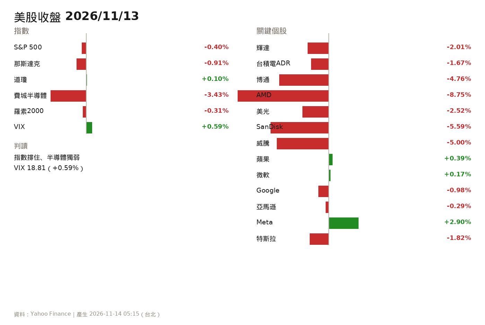
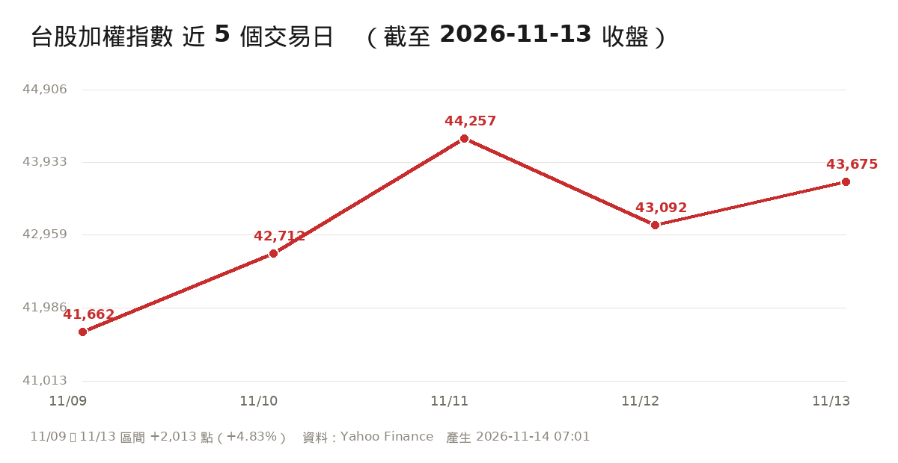
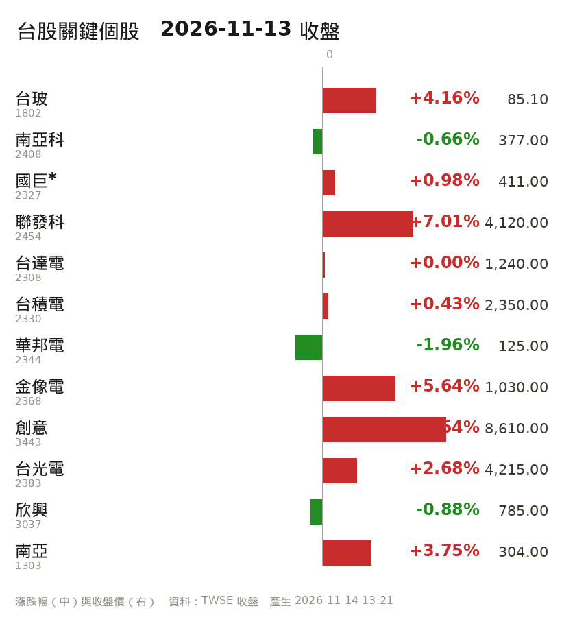
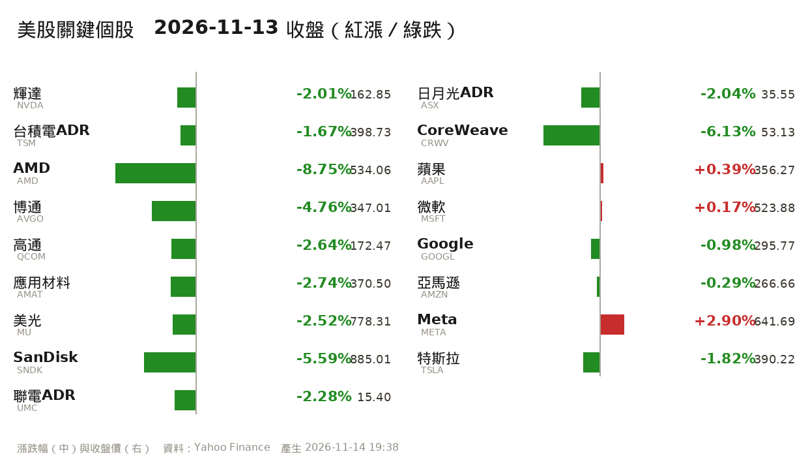
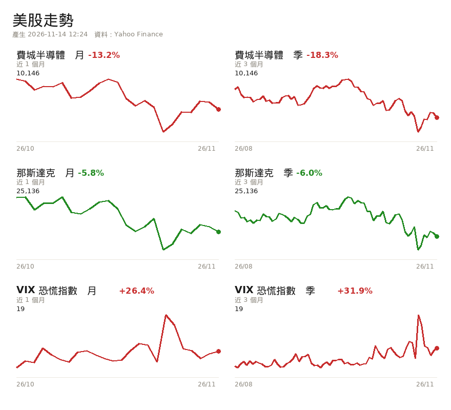
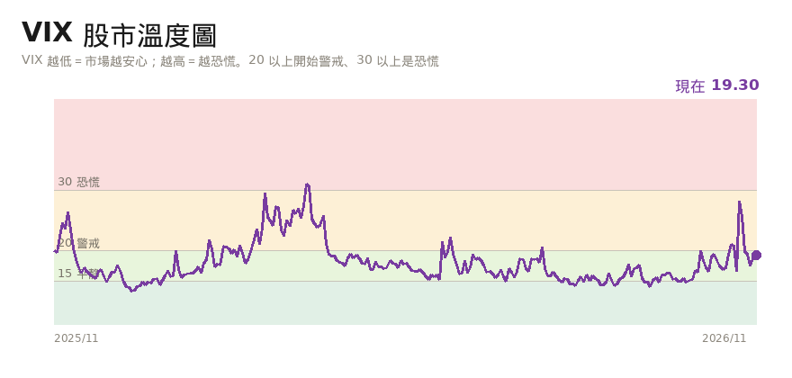
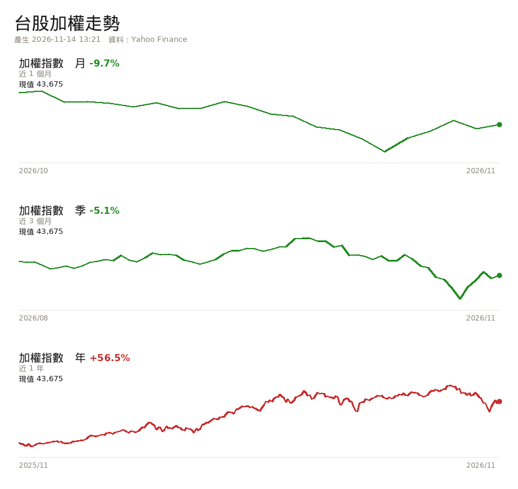
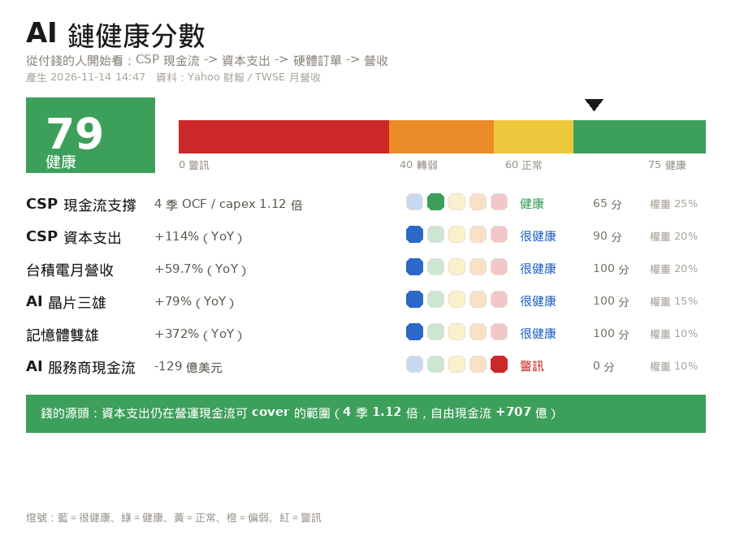
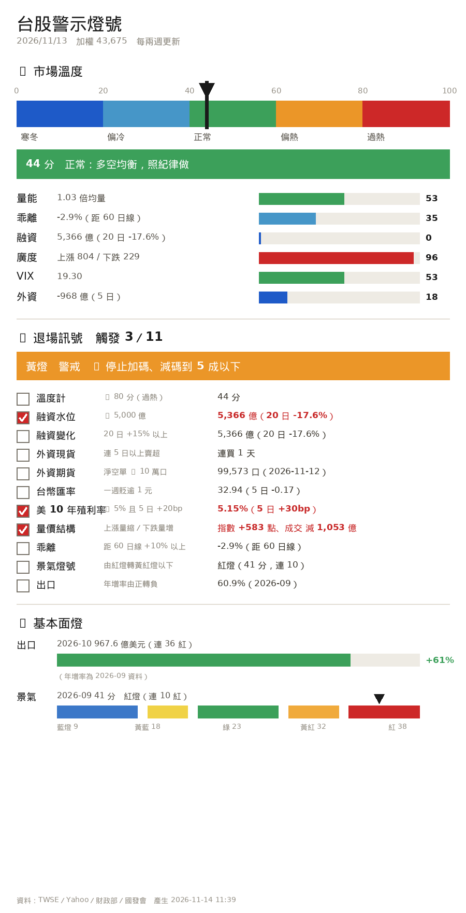
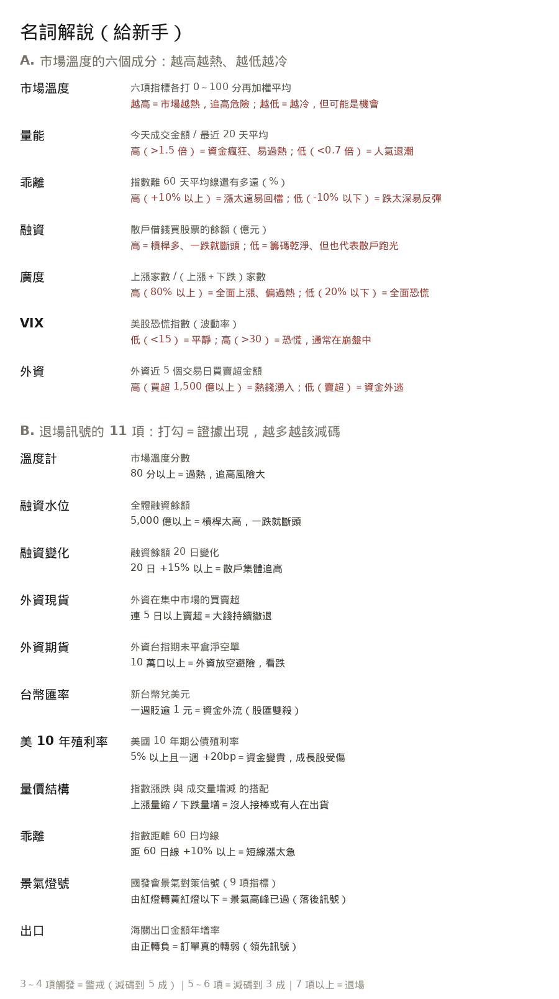

今天是週六，台股休市。本報台股數字為 11/13（五）收盤（本週最後交易日），美股為 11/13（五）美股收盤。下一個交易日是 11/16（一）。
來源：
財經頻道/Emmy追劇時間/Emmy重點提醒追蹤.md。未解除就會每天出現；判定解除當天標「過期」，隔天起不再列出。
危機警報 盤中每5分 的排程是 */5 9-13 * * 1-5，next run 2026-11-16 09:00；危機警報 影片檢查22:20 next run 今晚 22:20。兩支都 active，最後一次執行（11/13 13:55、11/13 22:20）都是 ok。alert_ack.json 最後一次 ack 還是 2026-11-08。下週一 09:00 起若再達 L1（大盤 -2%／個股 -5%）會重新通知。這一節是 11/12 日報就有的格式，11/13、11/14 漏掉了，現在補回來。三題都是這一週市場爭論最凶、也最容易把「傳聞」當「事實」操作的地方。
已發生：11/12 董事會正式宣布 消息面：「庫克接任」「員工連署要他回來」
| 項目 | 狀態 | 說明 |
|---|---|---|
| 黃仁勳辭去總裁、執行長、董事 | ✅ 已發生 | 11/12 董事會宣布，即起生效 |
| 財務長 Colette Kress（59 歲）任臨時執行長兼 CFO | ✅ 已發生 | 財務出身，不是技術派 |
| Harvey C. Jones（前 Synopsys 執行長）任首任董事長 | ✅ 已發生 | 公司史上第一次設董事長 |
| 啟動永久 CEO 遴選，內外部人選都考慮 | ✅ 已發生 | 沒有時間表 |
| 蘋果庫克在繼任人選序列 | 🟡 消息面 | 來自 Emmy 貼文轉述同事聽到的消息，公司未證實 |
| 員工連署要求迎回黃仁勳 | 🟡 消息面 | 未經公司證實 |
怎麼用：股價反應的是「確定換人」這件事（11/13 輝達 162.85、-2.01%，市值再縮）。不要因為「庫克要來」這種傳聞去買，也不要因為「黃仁勳會回任」的傳聞去搶反彈。真正要等的是 11/17 Q3 財報——那是沒有黃仁勳的第一份財報，管理層對 AI 需求與對台採購的說法，比任何人事傳聞都重要。
已發生：11/10 正式財報，營收與指引真的超預期 但獲利惡化、股價仍在破底
| 項目 | 數字 | 判讀 |
|---|---|---|
| 營收 | 36.61 億美元，年增 +168% | 優於預估 35.5 億 ✅ |
| 營業利益 | 2.07 億美元，年增 +298%，營益率 6% | 本業轉好 ✅ |
| 調整後 EBITDA | 22.56 億美元，margin 62% | 很強 ✅ |
| 淨損 | 7.09 億美元（去年同期 1.10 億，惡化 6 倍多） | ❌ 重點 |
| 淨利息費用 | 8.46 億美元（去年 3.10 億） | ❌ 利息吃掉獲利 |
| 總債務 | 469 億美元 | ❌ 槓桿高 |
| 單季資本支出 | 145 億美元（前季 94 億） | 燒錢加速 |
| 已簽約未認列營收 | 1,325 億美元 | ✅ 需求能見度高 |
| 2026 全年營收指引 | 上調至 130～133 億美元 | ✅ 真的上調 |
後續（已發生）：CoreWeave 11/13 收 53.13 美元、-6.13%，財報後那一根反彈已經全部吐回。也就是說，市場對「營收很好」買單了一天，之後回頭看的是「淨損與 469 億債務」。
一句話：CoreWeave 的問題不是「需求不夠」，是「借太多錢、利息太貴」。這條線跟 11/13 那張「AI 鏈健康分數」的底座是同一個問題——借錢買機器的人，財務跟不上營收。
還沒發生的（管理層預期，不能當事實）：未來 3 個月收到 90 億美元客戶預付款；2028 上半年實現調整後獲利。
已發生：路演啟動、價格區間公布 消息面：數倍超額認購（彭博引述知情人士）
| 項目 | 狀態 |
|---|---|
| 6/1 保密遞交 IPO 申請 | ✅ 已發生 |
| 美東 11/10 啟動路演，價格區間 每股 70～78 美元 | ✅ 已發生 |
| 預計 11/18 定價、11/19 那斯達克掛牌（代號 ANT） | ⏳ 還沒發生 |
| 最多募約 643.5 億美元；Google、輝達、台積電等 7 家基石投資人認購 260 億，合計上看 904 億 | ✅ 條款已公布 |
| 「數倍超額認購」 | 🟡 彭博引述知情人士，公司未證實 |
| 11/9 曾傳「近 700 億美元 IPO 定價突然撤回」 | 🟡 媒體報導，過程有反覆 |
怎麼用：11/18 定價落在區間上緣（78 美元）才算利多兌現；落在下緣或破發就是利空。這是下週第二個定價錨（第一個是 11/17 輝達財報）。在那之前只能當氣氛指標，不能當買進理由。
11/13 台股是「利空出盡」的反彈：+583.25 點收 43,675.12（+1.35%）、外資終結連 11 賣轉買 288.36 億、週線 +10.01% 終結連 4 黑。但同一個晚上，美股費城半導體 -3.43%、AMD -8.75%、博通 -4.76%、美光 -2.52%，把「反彈能不能延續」這個問題直接丟回下週一。下週只有一個真正的定價錨：11/17 輝達 Q3 財報；在那之前，反彈都只能當反彈，不是趨勢。你目前是 100% 現金（11/08 全數出清、成交價待補），這根反彈你沒吃到，但 11/12 那 1,165 點你也沒受傷——所以下週的題目不是「要不要減碼」，而是「要不要追這根反彈」，紀律的答案是不追。三檔想買回的順序：2454 在題材風口上但一天漲 7%、2330 落後大盤要等 11/17 驗證、8299 是唯一「外資目標價低於現價」的那一檔。
| 指數 | 收盤 | 漲跌 | 漲跌幅 |
|---|---|---|---|
| 道瓊工業 | 52,347.55 | +50.46 | +0.10% |
| 標普 500 | 7,561.67 | -30.73 | -0.40% |
| 那斯達克 | 25,136.27 | -229.82 | -0.91% |
| 費城半導體 | 10,146.32 | -360.35 | -3.43% |
| 羅素 2000 | 2,790.49 | -8.57 | -0.31% |
| VIX 恐慌指數 | 19.15 | +0.45 | +2.41% |

本週與總經
| 項目 | 數值 | 說明 |
|---|---|---|
| 標普週線 | +2.51% | 終結連 4 週下跌 |
| 那指週線 | +2.27% | 同上 |
| 道瓊週線 | +2.07% | 同上 |
| 10 年期美債殖利率 | 5.15% | 本週再往上，壓抑高本益比股 |
| 美元指數 | 103.41（+0.23%） | 續強 |
| 布蘭特原油 | 96.08（+0.27%） | 胡塞襲擊沙特油管泵站、霍爾木茲 4 艘油輪遇爆炸 |
| WTI 原油 | 88.92（+0.20%） | 同上 |
| 美元／台幣 | 32.88 | 台幣仍偏弱，外資匯入力道待觀察 |
| 美國 10 月 PPI | 月增 0.3%（預期 0.4%）、年增 6.5% | 比預期低，但市場仍定價 12 月至少升息一碼（升兩碼機率 15%） |
關鍵個股（美股 11/13）
| 個股 | 收盤 | 漲跌幅 | 判讀 |
|---|---|---|---|
| 輝達 NVDA | 162.85 | -2.01% | 盤中一度殺到 159 附近，尾盤收斂；11/17 財報是下一個考題 |
| 台積電 ADR | 398.73 | -1.67% | 連 2 日走弱，對 2330 下週一的開盤是壓力 |
| AMD | 534.06 | -8.75% | 前一日才因美銀調升目標價 +5.86%，一天吐光還倒扣，典型「事件溢價回吐」 |
| 博通 AVGO | 347.01 | -4.76% | 同族群一起被降評價 |
其他關鍵個股（美股 11/13 收盤）
11/12 日報有 6 家、11/13 日報有 9 檔，11/14 一度只剩 4 檔。這一塊是你要的「美國知名大廠」，補回來。
| 個股 | 收盤 | 漲跌幅 | 判讀 |
|---|---|---|---|
| 美光 MU | 778.31 | -2.52% | 記憶體四連弱，直接對應 8299 群聯 |
| SanDisk SNDK | 885.01 | -5.60% | NAND 最弱的一檔，跌幅是美光的兩倍 |
| 高通 QCOM | 172.47 | -2.64% | 手機晶片需求平淡，跟跌 |
| 應用材料 AMAT | 370.50 | -2.74% | 設備股同步收縮，代表資本支出預期在下修 |
| 聯電 ADR UMC | 15.40 | -2.28% | 成熟製程跟跌，對台股二哥是壓力 |
| 日月光 ADR ASX | 35.55 | -2.04% | 封測跟跌，AI 封裝題材沒能撐住 |
| SK 海力士（000660.KS） | 1,216,000 韓元 | -3.03% | HBM 龍頭同步走弱，是記憶體評價收縮的上游訊號（與美光、SanDisk 同向）；非 ADR，直接看韓股 |
| CoreWeave CRWV | 53.13 | -6.13% | 財報後漲幅全部吐回，AI 鏈底座最弱的一環 |
六大巨頭（美股 11/13 收盤）
這一欄 11/12、11/13 都有寫（11/13 標題是「上漲的部分（別只看跌）」），11/14 整段不見了。補回來。
| 公司 | 收盤 | 漲跌幅 | 判讀 |
|---|---|---|---|
| 蘋果 AAPL | 356.27 | +0.39% | 硬體需求穩，資金往非 AI 標的躲 |
| 微軟 MSFT | 523.88 | +0.17% | 小漲，Azure 資本支出仍是市場焦點 |
| Google GOOGL | 295.77 | -0.98% | 自研 TPU 題材沒撐住，跟大盤跌 |
| 亞馬遜 AMZN | 266.66 | -0.29% | 相對抗跌，AWS 需求仍被看好 |
| Meta | 641.69 | +2.90% | 六大巨頭最強，逆勢大漲，代表資金沒離開 AI 資本支出 |
| 特斯拉 TSLA | 390.22 | -1.82% | 跟跌，沒有獨立題材 |
這張表的重點（別只看跌）：指數跌 0.40%、費半跌 3.43%，但六大巨頭裡有 3 家是紅的（蘋果、微軟、Meta），Meta 還大漲 2.90%。意思是這一波不是「AI 全面崩」，而是**「半導體評價收縮、資金轉向有現金流的平台股」**。真正的弱點集中在記憶體（美光、SanDisk）與負債高的新興雲端（CoreWeave）。
下跌主因（已發生的事實）：輝達治理風波未落幕（董事會尚未公布正式 CEO），資金從「AI 受惠股」整體撤出；同日 AMD、博通、美光同步大跌，屬於整個半導體的評價收縮，不是單一公司利空。消息面：市場傳出員工連署要求董事會迎回黃仁勳、庫克被點名在繼任人選序列——都未經公司證實，不要當事實操作。
跨市場（11/13 收盤，Yahoo Finance）
| 項目 | 數值 | 變化 | 意義 |
|---|---|---|---|
| 美 10 年期公債殖利率 | 5.154% | +5.1 bp（11/12 5.103% → 11/13 5.154%） | 續創高，壓抑高本益比股 |
| 美 5 年期 | 4.981% | +3.6 bp（11/12 4.945%） | 短端同步，升息預期沒退 |
| 美元指數 | 103.41 | +0.23% | 資金續留美元 |
| 布蘭特原油 | 95.84 | +0.02% | 葉門胡塞襲油管泵站、霍爾木茲 4 艘油輪遇爆炸 |
| 西德州原油 | 88.56 | -0.20% | 高位震盪 |
| 黃金 | 3,886.30 | +0.03% | 避險需求持平，沒有恐慌性買盤 |
| 美元／台幣 | 32.939 | +0.23% | 台幣仍貼 33 元，外資匯入力道待觀察 |
| VIX 恐慌指數 | 19.15 | +2.41% | 恐慌升溫但未失控（20 以上才是警戒） |
一句話：殖利率 5.15%、油價 95.8、VIX 19.15——三個都在往上，但都還沒到「失控」的門檻。真正壓著評價的是利率，不是油價。

| 項目 | 數值 | 漲跌 |
|---|---|---|
| 加權指數 | 43,675.12 | +583.25（+1.35%） |
| 盤中高／低 | 44,489.48／43,534.12 | 盤中最高 +1,397.61 點 |
| 成交金額 | 9,162.55 億元 | 較 11/12 的 1.01 兆縮 |
| 櫃買指數 | 342.41 | +6.68（+1.99%），成交 2,208.12 億 |
| 外資 | +288.36 億元 | 終結連 11 賣（11 天累計賣 8,312.52 億） |
| 投信 | +82.37 億元 | 連 24 買 |
| 自營商 | +68.92 億元 | 由賣轉買 |
| 三大法人合計 | +439.65 億元 | 同步買超 |
| 融資餘額 | 5,365.99 億元 | +31.24 億（散戶槓桿回頭） |
| 台指期淨空單 | 突破 10 萬口 | 11/12 為 99,573 口，11/13 再度站上 10 萬 |
| 台指期夜盤（11/13） | 43,706 | 較開盤參考價 -133；盤中最低 42,956 |
盤勢節奏：開盤直接跳空反應「黃仁勳辭職＝利空出盡」，盤中一度大漲近 1,400 點衝到 44,489，但月線（約 4.4 萬）一帶解套賣壓立刻浮現，終場只剩 +583 點。上漲 983 家，漲停集中在 ASIC／IP（創意、世芯-KY、智原、M31、晶心科），成交量第一名是台玻（441,073 張）卻同時是外資賣超第四名——這是「散戶接手、外資調節」的組合，不是健康輪動。
資金線：外資買超前十名是 4 檔主動式 ETF＋4 檔金融股＋聯電、敬鵬；賣超前十名是大成鋼、中鋼、友達、台玻、仁寶。也就是說，288 億的買超大部分進 ETF 與金融，不是進電子權值——台積電當天仍被外資賣超 2,618 張（連 2 賣）。
影片觀點：
財經頻道/一綺聊股/2026-11-13_黃仁勳下台後台廠利多/筆記.md（24:01，字幕為英文配音回譯，數字已經證交所校正）。
🔴 看多／加碼訊號
🟢 危機／減碼訊號
📊 情緒溫度計（三集合計，grep 實算）
11/13 日報有這一節，11/14 漏掉了。用逐字稿關鍵詞實際計數，不是憑感覺。
| 集數 | 危機詞 | 看多詞 | 語氣 |
|---|---|---|---|
| 11/11 大摩降評 | 15 | 67 | 中性偏多，對記憶體轉保守 |
| 11/12 黃仁勳爆小四 | 40 | 18 | 防禦、觀望、事件驅動（最保守的一集） |
| 11/13 黃仁勳下台後 | 8 | 52 | 明顯轉多：危機詞掉到 8，看多詞跳回 52 |
判讀：她在 11/12 把風險講到最重（危機詞 40），11/13 黃仁勳真的下台後，危機詞反而掉到 8、看多詞跳到 52。這代表她把「人事不確定性」當成已解除的事件，而不是持續風險——所以她 11/13 才敢講「台廠利多」、並自述在聯發科跌時兩次加倉。
但要注意：她轉多的時間點是 11/13 台股大漲當天。在漲了 583 點之後才轉多，參考價值要打折——這跟她 11/09 講「外資空單破 10 萬口」一樣，都是事後確認，不是事前預警。看她的產業判斷（ASIC 轉單、CSP 自研），不要看她的方向宣稱。
Emmy 貼文（貼文，非影片；05:30 抓取）
2026年11月13日 黃仁勳下台後 台廠利多還是利空？ASIC 全面噴出、景碩怎麼了
🔗 筆記：財經頻道/一綺聊股/2026-11-13_黃仁勳下台後台廠利多/筆記.md
11/12、11/13 日報都有這一節，11/14 漏掉了，補回來。
持倉現況：11/08 已全數出清，目前 100% 現金（
交易日誌/2026-11-08.md記載「使用者決定全部出清持股」，成交價與成交日尚未提供，待補）。持股/三個檔案仍是空白模板，成本與股數都是「（填）」，所以算不出停損、也算不出損益——這一節改成「三檔的觀察與回補條件」。
| 代碼 | 11/13 收盤 | 漲跌幅 | 成交量 | 外資當日 | 影片提到 | 我的狀態 |
|---|---|---|---|---|---|---|
| 2330 台積電 | 2,350 | +10（+0.43%） | 28,790 張 | 賣超 2,618 張（連 2 賣） | 只說「穩盤」 | 空手，等 11/17 財報 |
| 2454 聯發科 | 4,120 | +270（+7.01%） | 13,586 張 | 買超 2,170 張（連 2 買） | 列為第一受惠，她已加倉 | 空手，漲停打開不追 |
| 8299 群聯 | 1,640 | +5（+0.31%） | 3,057 張 | — | 沒點名，但記憶體「不投入新資金」 | 空手，外資目標 1,357 |
2330 台積電
2454 聯發科
8299 群聯
| 代碼 | 名稱 | 現價 | 漲跌 | 成交量 |
|---|---|---|---|---|
| 2330 | 台積電 | 2,350.0 | +0.43% | 28,790 張 |
| 2308 | 台達電 | 1,240.0 | +0.00% | 13,439 張 |
| 2454 | 聯發科 | 4,120.0 | +7.01% | 13,586 張 |
| 3443 | 創意 | 8,610.0 | +9.54% | 2,474 張 |
| 2383 | 台光電 | 4,215.0 | +2.68% | 3,344 張 |
| 2408 | 南亞科 | 377.0 | -0.66% | 49,231 張 |
| 3037 | 欣興 | 785.0 | -0.88% | 28,141 張 |
| 1802 | 台玻 | 85.1 | +4.16% | 441,073 張 |
| 1303 | 南亞 | 304.0 | +3.75% | 102,093 張 |
| 2327 | 國巨* | 411.0 | +0.98% | 36,470 張 |
| 2368 | 金像電 | 1,030.0 | +5.64% | 12,862 張 |
| 2344 | 華邦電 | 125.0 | -1.96% | 46,075 張 |
| 代碼 | 名稱 | 今日 | 連續 | 近 5 日累計 | 近 10 日累計 |
|---|---|---|---|---|---|
| 2408 | 南亞科 | +816 | 買超 4 天 | +15,014 | -6,665 |
| 2327 | 國巨* | +1,214 | 買超 4 天 | +4,073 | -13,523 |
| 2368 | 金像電 | +2,659 | 買超 1 天 | -1,497 | -4,638 |
| 2454 | 聯發科 | +2,170 | 買超 2 天 | -1,140 | -20,468 |
| 3443 | 創意 | +75 | 買超 2 天 | -865 | -1,738 |
| 1802 | 台玻 | -11,317 | 賣超 1 天 | +247,209 | +248,775 |
| 2330 | 台積電 | -2,618 | 賣超 2 天 | -17,476 | -98,884 |
| 1303 | 南亞 | -7,711 | 賣超 3 天 | -16,921 | -73,414 |
| 2344 | 華邦電 | -1,239 | 賣超 4 天 | -16,758 | -77,973 |
| 3037 | 欣興 | -2,566 | 賣超 3 天 | -14,621 | -34,465 |
| 2308 | 台達電 | -1,411 | 賣超 12 天 | -8,589 | -20,790 |
| 2383 | 台光電 | -75 | 賣超 1 天 | -2,512 | -6,084 |
法人資料截止：2026-11-13（TWSE T86）｜報價時間 13:30:00
三個要注意的訊號
追蹤 5 檔 AI／半導體 ETF（5 家不同發行商）的前 25 大持股；≥4 檔同時持有才列入。 ETF：SMH、SOXX、XLK、QQQ、VGT ｜ 查詢：2026-11-14 07:01
| 股票 | 名稱 | 持有 ETF 檔數 | 合計權重 |
|---|---|---|---|
| NVDA | NVIDIA | 5 | 61.3% |
| AMD | Advanced Micro Devices | 5 | 29.7% |
| AVGO | Broadcom | 5 | 26.6% |
| MU | Micron | 5 | 24.1% |
| TXN | Texas Instruments | 5 | 15.3% |
| INTC | Intel | 5 | 14.4% |
| AMAT | Applied Materials | 5 | 12.9% |
| LRCX | Lam Research | 5 | 12.0% |
| ADI | Analog Devices | 4 | 12.0% |
| KLAC | KLA | 4 | 10.8% |
| QCOM | Qualcomm | 4 | 10.8% |
| MRVL | Marvell | 4 | 8.7% |
12 檔符合 ≥4 檔 ETF 共識
⚠️ 這是「被動資金需求」的參考，不是買進建議。ETF 納入常發生在股價已漲之後。台股 ETF 目前尚未接入（發行商持股為 JS 載入）。
| 面向 | 內容 |
|---|---|
| S 優勢 | 你最大的優勢就是空手：11/08 出清後，11/12 那 1,165 點、11/06 那 1,873 點你都沒受傷，決策權完全在自己手上。三檔觀察標的的基本面也沒壞：2330 的 10 月營收與美國廠獲利都創高、2454 是 CSP 自研 ASIC 的設計整合方、8299 有庫藏股與 aiDAPTIV 題材。 |
| W 弱勢 | 現金 100% 就是「完全沒有參與反彈」，11/13 這根 +583 點你吃不到；而 持股/ 三個檔案的成本／張數仍是空白，一旦買回就無法算停損。另外三檔全在同一條 AI 半導體線上，買回等於一次押一個產業。 |
| O 機會 | 11/17 輝達財報若營收與財測優於預期，等於替整個 AI 供應鏈重新定價；Anthropic 11 月底 IPO 可能帶動作帳；ASIC 轉單是接下來 1-2 季最明確的題材。空手的人有資格等「三條件成立」再進場，不必搶第一天。 |
| T 威脅 | 美股半導體 11/13 才剛 -3.43%（AMD -8.75%），評價收縮還沒結束；外資台指期淨空單仍在 10 萬口以上，避險部位沒退；油價 96 美元＋美債 5.15% 讓高本益比股沒有喘息空間。最大的威脅不是行情，是「怕錯過」而破壞紀律。 |
| 日期 | 事件 | 為什麼重要 |
|---|---|---|
| 11/16（一） | 台股開盤、台指期夜盤（11/13 收 43,706，-133） | 費半 -3.43% 的補跌壓力測試，看 43,000 是否守住 |
| 11/16（一） | 景碩（3189）處置期滿（依一綺影片所述） | ABF 載板族群的賣壓指標，不是你的持股但會影響市場情緒 |
| 11/17（二） | 輝達 Q3 FY2027 財報（美東盤後，台灣 11/18 清晨） | 沒有黃仁勳的第一份財報，管理層對 AI 需求與對台採購的說法比數字重要 |
| 11/17（二） | 美國 10 月零售銷售（市場預期月增約 0.38%） | 內需是否撐得住升息 |
| 11/17（二） | 00878 國泰永續高股息除息（預估 1.25 元） | 高股息 ETF 資金移動 |
| 11/18（三） | 美國國會閉門簡報（依筆記與外媒所述） | 若升級為傳票或出口管制，AI 供應鏈會再震一次 |
| 11/18（三） | 華邦電（2344）除息 2.00 元 | 記憶體族群觀察點 |
| 11/18（三） | Anthropic IPO 定價（區間 70～78 美元，最多募 643.5 億） | 定價落在 78 美元上緣才算利多兌現；下緣或破發是利空 |
| 11/19（四） | Anthropic 那斯達克掛牌（代號 ANT） | 今年最大 IPO，AI 評價的公開錨點 |
| 11/26（四） | 美股感恩節休市 | 下下週的事，先記著 |
讀 ~/vault/交易紀律.md（小賀版 v1）逐條對照 11/13-11/14 的狀況：
| 紀律條文 | 現在的狀況 | 該做什麼 |
|---|---|---|
| 大盤跌破季線且外資連 3 日大賣 → 總持股降到 3 成以下 | 外資 11/13 轉買 288 億，「連 3 日大賣」不成立；但指數 43,675 仍在季線（約 4.5 萬）之下 | 你目前 0 持股，這條自動合規。減碼壓力解除 ≠ 可以進場，等站回季線再談 |
| 進場三條件（站上 20 日線＋量能 1.5 倍＋催化劑） | 指數僅回到 5、10 日線上，月線仍是反壓；11/13 的催化劑是「利空出盡」不是新利多 | 三條件不成立，下週一開高不是進場理由 |
| 跌破進場價 -7% 無條件賣出 | 現在沒有部位，這條今天不適用；但一旦買回就一定用得到 | 買之前先把「進場價 -7%」寫在紙上，並填進 持股/*.md 的成本欄 |
| 不追漲停 | 11/13 漲停一整排（創意、世芯、智原、M31、晶心科）；2454 也開過漲停 | 下週一開高不要追，尤其不要追 4,200 以上的 2454 |
| 不攤平虧損 | 目前沒有虧損部位，這條的風險是「買回後在下跌中再加」 | 8299 若買回後下跌，絕對不攤平——它是三檔裡唯一被外資降到 Underweight 的 |
| 單一個股上限 20%、現金 ≥20% | 現金 100%，兩個上限都還沒用到 | 第一次買回就決定張數：先算「最多能虧 2%」，再決定買幾張，不要反過來 |
| 催化劑消失就出場 | 2330 的催化劑（輝達訂單）要等 11/17 財報驗證 | 11/17 之前不進場 2330，也不因「它很便宜」提前買 |
與影片建議衝突的地方（必須指出來）：一綺 11/13 說聯發科「跌時兩次加倉、攤低成本」——那是她自己的部位、她自己的成本。你現在是空手，沒有成本可以攤；把「她加碼」當成進場理由，等於用別人的部位管理方式做自己的決策。可以採用她的邏輯（ASIC 轉單是真的），不能採用她的動作。
資料來源
http://127.0.0.1:8787/api/quotes（證交所／櫃買，11/13 13:30 收盤）財經頻道/一綺聊股/2026-11-13_黃仁勳下台後台廠利多/筆記.md、財經頻道/Emmy追劇時間/Emmy追劇貼文2026-11-14_原始.md財經頻道/週報/2026-W45.md（11/08 產出，本週無更新）這一版（版1→現行版）補抓的資料
財經頻道/一綺聊股/2026-11-11～11-13 逐字稿關鍵詞實算（危機詞／看多詞），非估計限制
產生時間：2026-11-14 07:00（台北）

資拓宏宇 6614、中華資安 7765、光鋐 4956、安普新 6743、意騰-KY 7749、華經 2468、伊雲谷 6689、晶心科 6533、資通 2471、沛爾生醫*-創 6949、達發 6526、來億-KY 6890、全宇生技-KY 4148、峰源-KY 6807、光麗-KY 6431、泰合 6467、榮惠-KY創 6924、聯德 3308、凌陽 2401、富邦媒 8454、智原 3035、鉅祥 2476、精金 3049、嘉澤 3533、事欣科 4916、瑞祺電通 6416、中環 2323、錸德 2349
台揚 2314、冠西電 2466、聯友金屬-創 7610
判定方式：收盤＝當日最高／最低且漲跌幅約 ±10%（TWSE 收盤資料 2026-11-13）。





AI 鏈健康分數：40／100（轉弱） 季等級，從「付錢的人」開始看。
積木邏輯：加權 54 分，但底座最弱環節只有 0 分，總分上限壓到 40 分。
錢的源頭：四大 CSP 近 4 季營運現金流 1.12 倍於資本支出，自由現金流 +707 億美元；最近一季 -264 億（已開始透支）；淨現金（現金−負債）-4,423 億美元。


每兩週更新一次，下次更新：2026-11-30。期間每日晨報都沿用本頁。
藍＝很安全、綠＝安全、黃＝正常、橙＝注意、紅＝危險。
| 指標 | 什麼情況叫危險 | 現在 | 燈號 |
|---|---|---|---|
| 溫度計 | 80 分以上＝過熱 | 44 分 | 正常 |
| 融資水位 | 5,000 億以上＝危險 | 5,366 億 | 注意 |
| 融資變化 | 20 日 +15% 以上＝危險 | -17.6% | 很安全 |
| 外資現貨 | 5 日賣超 1,000 億以上＝危險 | 5 日 -968 億 | 注意 |
| 外資期貨 | 淨空單 10 萬口以上＝危險 | 99,573 口 | 注意 |
| 台幣匯率 | 一週貶逾 1 元＝危險 | 32.94（5 日 -0.17） | 安全 |
| 美 10 年殖利率 | 5% 以上＝危險 | 5.15%（5 日 +29bp） | 注意 |
| 量價結構 | 上漲量縮／下跌量增＝危險 | 上漲＋量縮（沒人接棒） | 注意 |
| 乖離 | 距 60 日線 +10% 以上＝危險 | -2.9%（距 60 日線） | 安全 |
| 景氣燈號 | 由紅燈轉黃紅燈以下＝危險 | 紅燈（41 分） | 注意 |
| 出口 | 年增率轉負＝危險 | +61%（2026-09） | 很安全 |
基本面是地板，不是天花板。 基本面最熱的時候，通常是股價最危險的時候。
~/.hermes/state/macro.json